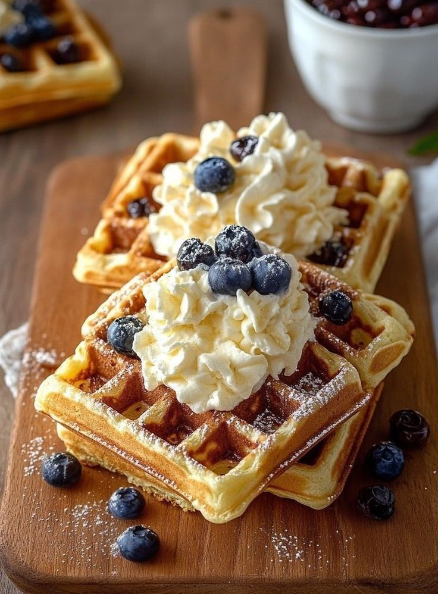
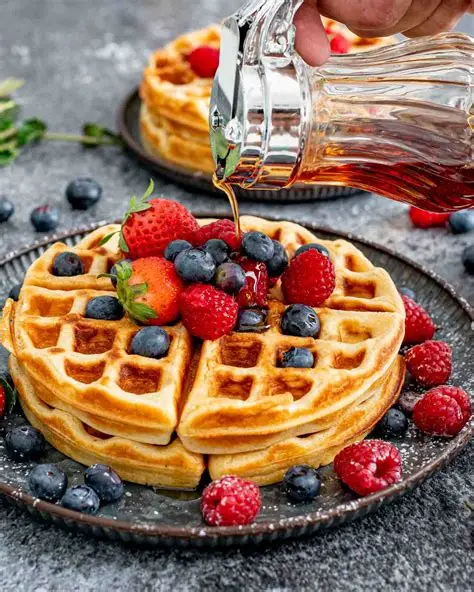

Waffles have a long and interesting history. Waffles originated from the ancient Greek glat cakes called obelios ,evolved into medieval European wafers in the 9th - 10th centuries and later developed into modern waffles through innovations in the belgiu, the Netherlands and the United State. Early waffle irons appeared in the medieval France and Belgium, and the word "waffle" entered English in 1725.

Hey I’m the Belgian Waffle!
Hold my whipped cream! I’m big, thick, ridiculously fluffy, and I stole the show at the 1964 NY
World’s Fair! I don't just do basic breakfast I am an absolute event! Thanks to my deep,
crater-like pockets, I can hold an entire mountain of berries, melted chocolate, and ice cream
without breaking a sweat!

And, I’m the American Waffle!
I’m thin, super crisp, and I don't try too hard! I came over with colonial Dutch irons way back
when, and I’ve been holding down the breakfast table ever since! My pockets are shallow, my vibe
is quick, and all I really need to make your morning awesome is a big melt of butter and a
generous drown of maple syrup!
Want to make your own waffle? Recipe!